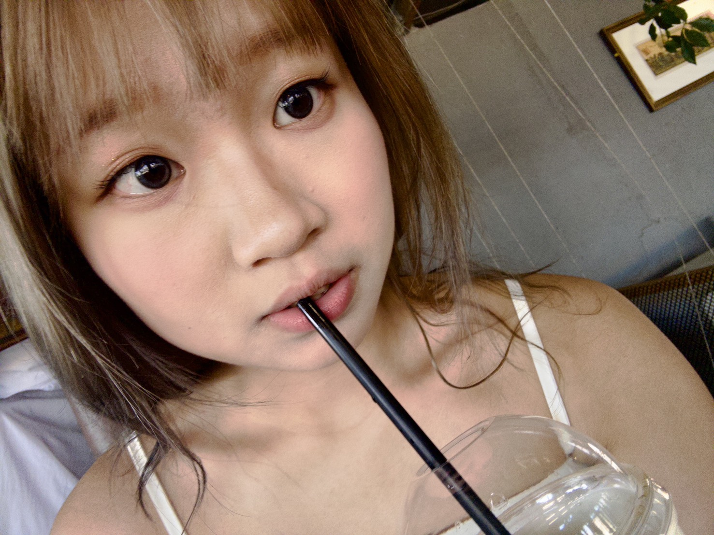
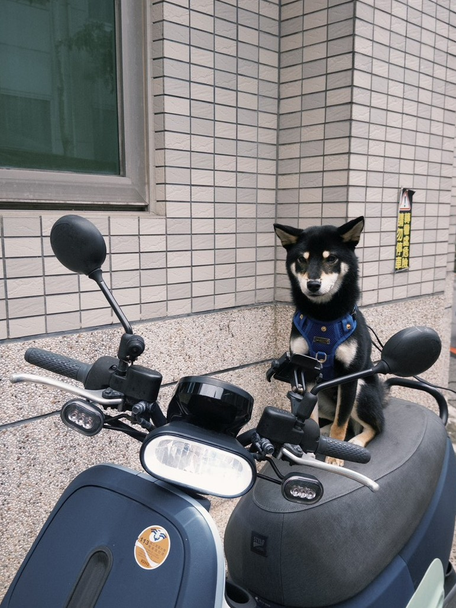
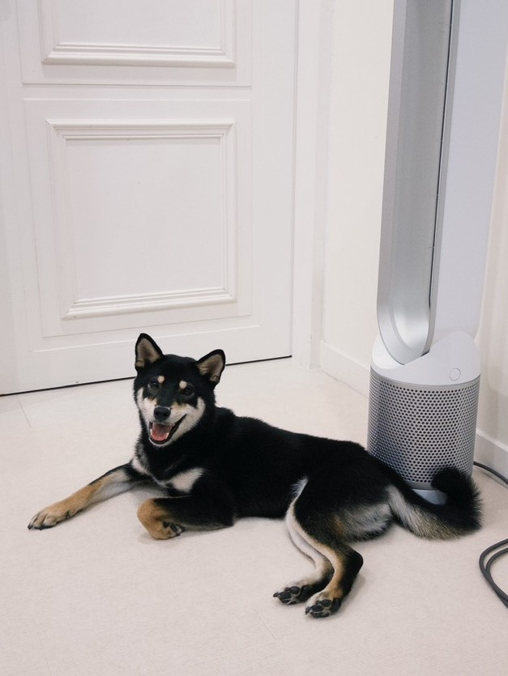

自我介紹

關於我
哈嚕，我是Judy，目前是國立清華大學外國語文學系的二年級學生。我來自新北市新店，現在都住在學校宿舍，同時也是來自台東的阿美族。
在不同文化背景中成長，塑造了我看待語言與身分的方式。過去我常常避免談論自己原住民的身分，因為我很少回到部落，對族群文化了解不多，也不會說阿美語。然而，進入大學後，遇到更多擁有相同背景的人，我逐漸開始重新認同這一部分的自己，也對自己的身分感到更有自信。這樣的轉變也讓我更深入思考語言，不只是學科，而是身分與經驗緊密相連的存在。 也正因如此，在我的主修中，我發現自己比起文學，更傾向語言學。我對語言在真實情境中如何運作特別感興趣，尤其是意義如何透過語境而非單純的規則被建構。
在學業之外，我喜歡旅行和探索新的地方。我總是特別被海洋吸引，也從不會對清澈透明的海水感到厭倦。這種好奇與驚嘆的感覺，讓我幾年前開始接觸自由潛水。雖然現在練習的時間變少了，但這仍然是我非常喜歡的活動，也希望未來能更常回去做這件事。
"仍然在探索語言、身分與一切之間"
IG: ccy.613
自由潛水：我與水下世界的片刻🤿
自由潛水是我最喜歡的興趣之一，我在三年前開始學習，因為我一直被海洋吸引。我喜歡旅行、探索新的地方，只要有機會，我總會往海邊跑。清澈透明的海水總是讓我感到驚艷，每次看到它，我都會忍不住停下來靜靜凝視。我也常常會想，如果不是站在水面上看，而是真的潛進去，會是什麼樣的感覺。正是這份好奇心，讓我開始嘗試自由潛水。
一開始學習的時候比我想像中還要困難。自由潛水不只是潛到水裡這麼簡單，它需要很多控制力，特別是對呼吸和思緒的掌握。即使身體開始感到不適，或是有一點緊張，你也必須保持冷靜。我還記得第一次幾次下潛時的緊張感，我不確定自己能不能做到，一切都很陌生，但當我終於能自己潛進水裡，看到完全不同的視角時，那種興奮感是非常強烈的。隨著時間過去，我慢慢習慣了那種感覺，也開始在水中變得更自在、更有自信。
因為自由潛水需要高度的專注力，所以我有時會發現，自己在潛水時反而變得非常平靜。在日常生活中，很少有這樣能感受到內心寧靜、與周圍世界完全連結的時刻。在水下的時候，我不會去想其他事情，只會專注在自己的呼吸、動作，以及周遭的環境。我很享受那種全然活在當下的感覺。它很簡單，但卻是一種很純粹、很美好的狀態。
我也發現自由潛水教會了我耐心。有時候我無法潛得更深，或是卡在某個狀態，這確實會讓人感到挫折。但與其強迫自己突破，我必須學會放慢節奏、放鬆身體，然後再重新嘗試。我覺得這是在日常生活中不太會刻意練習的能力，也讓這個興趣變得更加有意義。
不過，自從上了大學之後，要在學業和自由潛水之間取得平衡變得比較困難。隨著課程、作業以及住校生活的展開，我不像以前那樣有那麼多時間練習。有時甚至必須暫時放棄練習，先專注在課業上。即便如此，這仍然是我非常喜歡的事情。我想這是一種我不會輕易放棄的興趣，而我也知道，只要有機會，我一定會再回到水裡。
我的小狗
Rich是一隻一歲大的黑色豆柴！他還像小朋友一樣，非常愛玩，也充滿活力。他特別喜歡會發出聲音的玩具，還有追球的遊戲。有時候興奮起來會在家裡瘋狂暴衝，但同時他也非常親人，很喜歡待在人的身邊。真的非常可愛～

